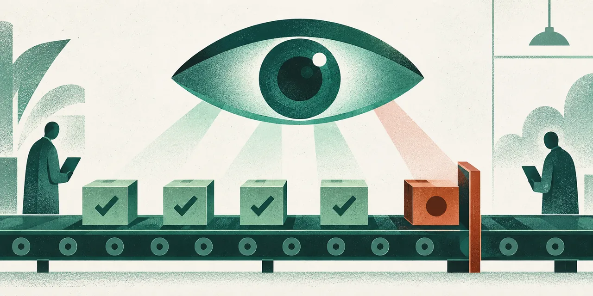

AI 인사이트 · 해설
에이전트 연구의 병목은 실패 뒤의 다음 단계에 있다
에이전트가 오래 일하려면 더 큰 모델이나 더 많은 실행 슬롯만으로 충분하지 않습니다. 작업이 끝나지 않았을 때 무엇을 미완료로 볼지, 다시 시도할지 멈출지, 언제 사람에게 넘길지를 정하는 바깥의 운영 구조가 필요합니다. OpenAI가 소개한 Third Moment Research 사례에서 주목할 점은 동시 실행 규모뿐 아니라, 실행과 감독의 역할을 나누어 설명한다는 데 있습니다.[1]
OpenAI의 고객 사례에 따르면 Third Moment Research는 정량 연구를 위해 Docker로 격리한 환경 안에서 기본 Codex 하네스를 실행합니다.[1] 이 기본 하네스는 에이전트가 도구를 쓰고 계획·목표를 세우며 하위 에이전트를 실행하는 작업 기반입니다.[1] GPT-6 Astra, GPT-6 Sol, GPT-6.1 Sol은 추론을 담당한다고 설명합니다.[1] 여기에 별도의 바깥 하네스가 더해집니다.[1] 작업을 끝내지 못한 궤적을 살펴 다음 행동을 판단하는 감독 층입니다.[1] 이 바깥 하네스는 GPT-6 Sol 또는 GPT-6.1 Sol로 작동하며, 미완료 궤적을 검토한 뒤 재시도, 작업 종료, 인간 검토로의 에스컬레이션 중 하나를 선택한다고 OpenAI는 전합니다.[1]
두 하네스를 구분하면 에이전트가 행동을 수행하는 층과 그 행동이 끝났는지 판단하는 층이 같지 않다는 점이 드러납니다.[1] 기본 Codex 하네스가 실행 수단을 제공하고, 바깥 하네스가 실패 뒤의 경로를 고르는 구조입니다.[1] 장시간 과업에서는 ‘실행 중’이라는 상태가 곧 진척을 뜻하지 않습니다. 멈춤이나 반복, 잘못된 방향을 감지해 다음 행동을 고르는 일이 실행을 이어가는 일만큼 중요해집니다.[1] 다만 공개 설명에는 미완료를 가르는 기준, 재시도 횟수나 임계값, 사람에게 넘기는 조건이 구체적으로 나오지 않습니다.[1]
이 구조는 사람의 역할도 다시 나눕니다.[1] 모든 시도를 사람이 붙들고 진행 상황을 확인하면 병렬 실행의 이점이 줄어듭니다. 반대로 모델에게 계속 맡기면 실패가 길게 이어질 수 있습니다. 바깥 하네스는 사람의 감독을 없애기보다 개입 지점을 정하는 운영 장치로 해석할 수 있습니다.[1] 실제로 어떤 판단이 자동화되고 어떤 경우에 사람이 최종 결정을 내리는지는 OpenAI의 설명만으로 확인하기 어렵습니다.[1]
사례에는 보안 경계도 포함됩니다. OpenAI는 Third Moment가 Daybreak로 시뮬레이션을 시작하기 전에 에이전트가 연구 환경을 벗어나거나 외부 네트워크에 접근할 수 있는지 시험한다고 설명합니다.[1] 이는 보안 테스트를 운영 흐름에 넣었다는 공급자·고객 측 설명입니다.[1] 시험을 수행했다는 사실만으로 탈출이 불가능하다고 입증되는 것은 아닙니다.[1] 공개 자료에는 테스트 범위나 독립 평가 결과가 제시되지 않았습니다.[1] 에이전트의 수와 세션 길이가 커질수록 격리 환경의 경계가 제대로 유지되는지 확인할 필요도 커집니다.[1]
성과 수치도 범위를 좁혀 읽어야 합니다. OpenAI 게시글은 Codex가 연간 주문 단위의 미국 주식 데이터 백테스트를 최적화해 약 3시간에서 약 3~5분으로 줄였다고 전합니다.[1] 이는 특정 연구 작업에 관한 고객 사례의 수치이지, 전체 업무의 비용이 97% 감소했다거나 다른 팀에서도 같은 개선이 재현된다는 뜻은 아닙니다.[1] 게시글은 10,000개 동시 에이전트와 36~48시간 세션 역시 소개하지만, 해당 페이지에는 이를 재현할 원시 로그, 독립 측정, 반복 실험 결과가 제시되어 있지 않습니다.[1] 따라서 규모와 성과는 공급자와 고객의 주장으로 읽어야 하며, 현재 확인 가능한 것은 OpenAI가 그런 운영 및 결과를 보고했다는 사실입니다.[1]
실무에서 물어야 할 것은 에이전트를 몇 개 띄울 수 있느냐만이 아닙니다. 미완료를 어떤 신호로 알아차리는지, 재시도의 한도를 누가 정하는지, 위험한 작업을 어떻게 격리하는지까지 설명할 수 있어야 합니다. 이 사례는 장시간 연구 시스템에서 실행 하네스와 감독 하네스가 서로 다른 역할을 맡을 수 있음을 보여줍니다.[1] 다만 실제 로그와 독립 측정이 없는 만큼 10,000개와 36~48시간, 백테스트 개선은 검증된 업계 기준이 아니라 OpenAI가 소개한 고객 운영 주장입니다.[1] 그 한계를 전제로 해도, 장시간 과업의 성능은 모델이 일을 수행하는 능력뿐 아니라 실패를 발견하고 다음 조치를 고르는 루프의 품질에도 달려 있습니다.
문해준 편집장 코멘트: 이 글은 동시 실행 수보다 실행과 감독을 나누는 구조를 구체적으로 설명합니다. 독자는 다음 고객 사례에서 미완료 판단 기준과 독립 계측도 공개됐는지 살펴보시면 좋겠습니다.
Sources
[1] OpenAI 고객 사례 — How Third Moment Research runs 10,000 agents for 36+ hours